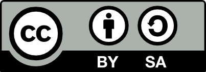

Speed Snake é um desafio para você: a cada dez pontos você sobe um nível. Supere sua velocidade e seus próprios
sentidos, passando por todos os 13 níveis, realizando a maior número de pontos possível.
Desenvolvido em plataforma web, facilita o acesso ao jogo e dispensa processos de instalação, tanto do próprio software como
de possíveis frameworks requeridos.
Formado em Ciência da Computação em 2014, utilizei conhecimentos adquiridos dentro e fora da sala de aula (e o
conceito do já popular Snake) para desenvolver esse jogo, com o objetivo de adquirir mais experiência com desenvolvimento web.
Atribuição-CompartilhaIgual 4.0 Internacional (CC BY-SA 4.0)

Todo o código fonte do jogo (exceto bibliotecas utilizadas) está sob a licença Atribuição-CompartilhaIgual 4.0 Internacional.
A trilha sonora (em estilo chiptune) está sob a licença Atribuição-SemDerivações-SemDerivados 3.0 Não Adaptada,
sob o selo chippanze e pertence aos seus recpectivos artistas.
Você tem o direito de:
- Compartilhar: copiar e redistribuir o material em qualquer suporte ou formato.
- Adaptar: remixar, transformar, e criar a partir do material para qualquer fim, mesmo que comercial.
- O licenciante não pode revogar estes direitos desde que você respeite os termos da licença.
De acordo com os termos seguintes:
-
Atribuição: Você deve dar o crédito apropriado, prover um link para a licença
e indicar se mudanças foram feitas. Você deve fazê-lo em qualquer circunstância razoável, mas de maneira alguma
que sugira ao licenciante a apoiar você ou o seu uso.
-
CompartilhaIgual: Se você remixar, transformar, ou criar a partir do material, tem de distribuir as suas contribuições
sob a mesma licença que o original.
-
Sem restrições adicionais: Você não pode aplicar termos jurídicos ou medidas de caráter tecnológico que restrinjam legalmente outros
de fazerem algo que a licença permita.